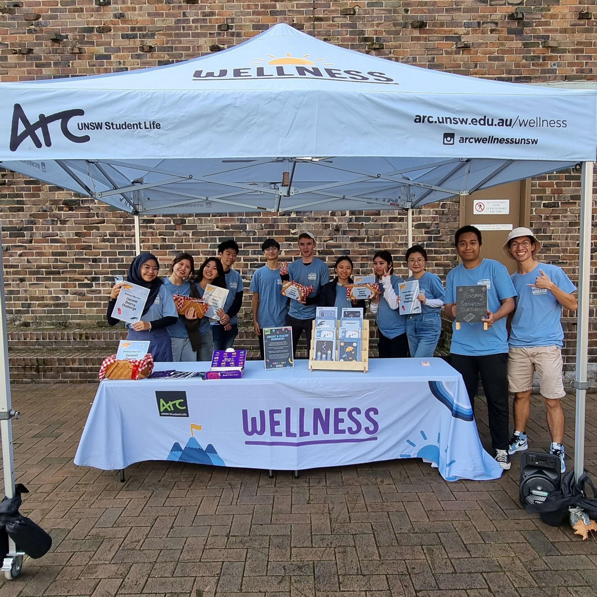
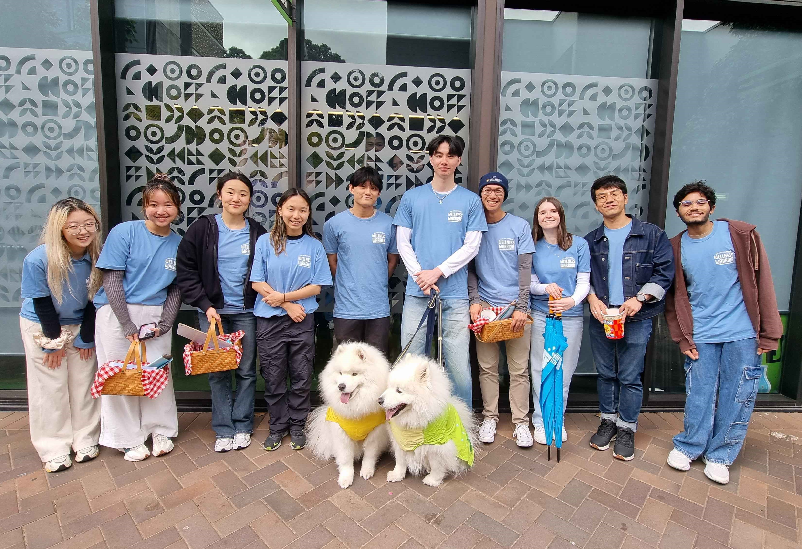
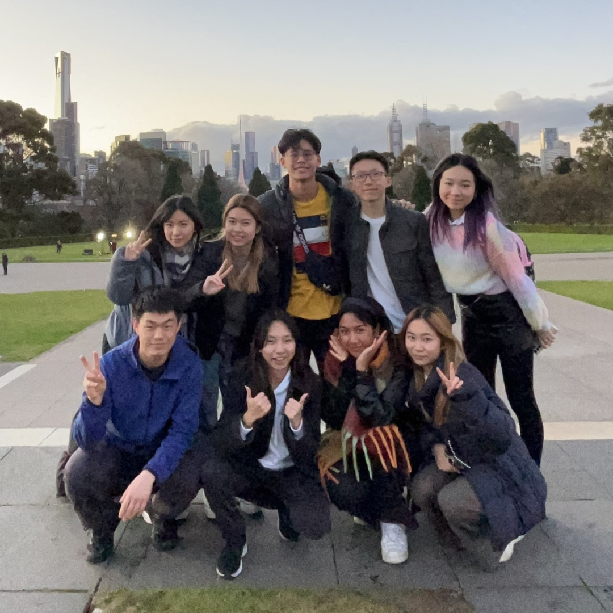
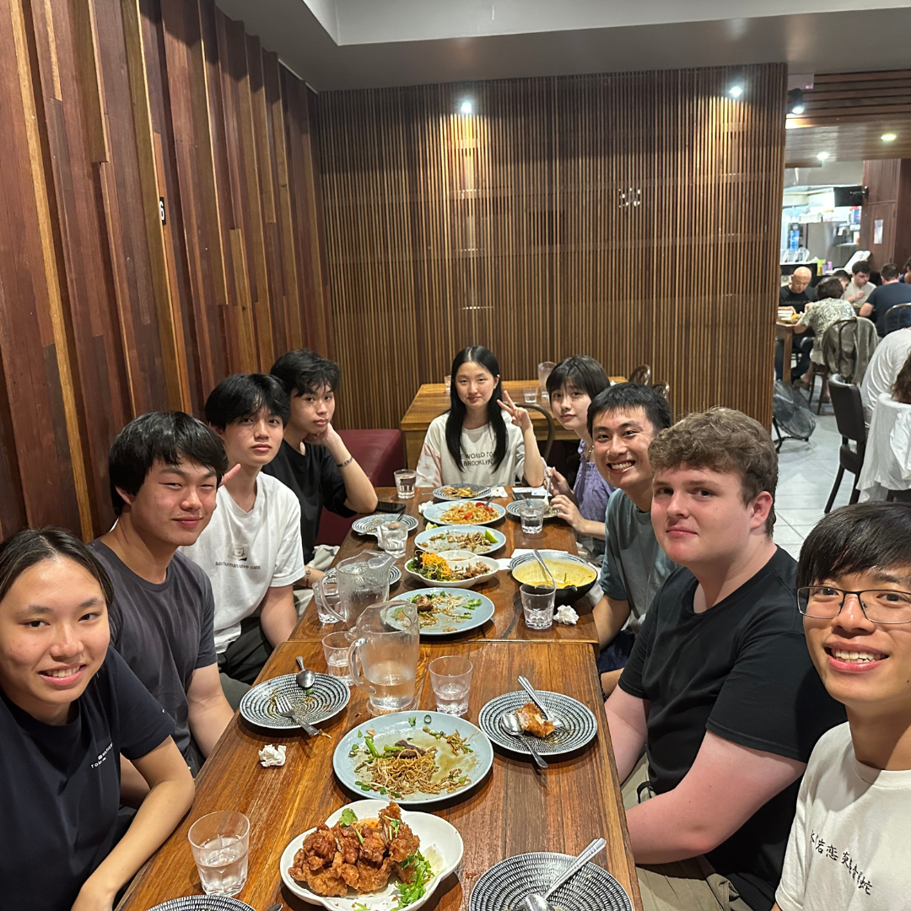
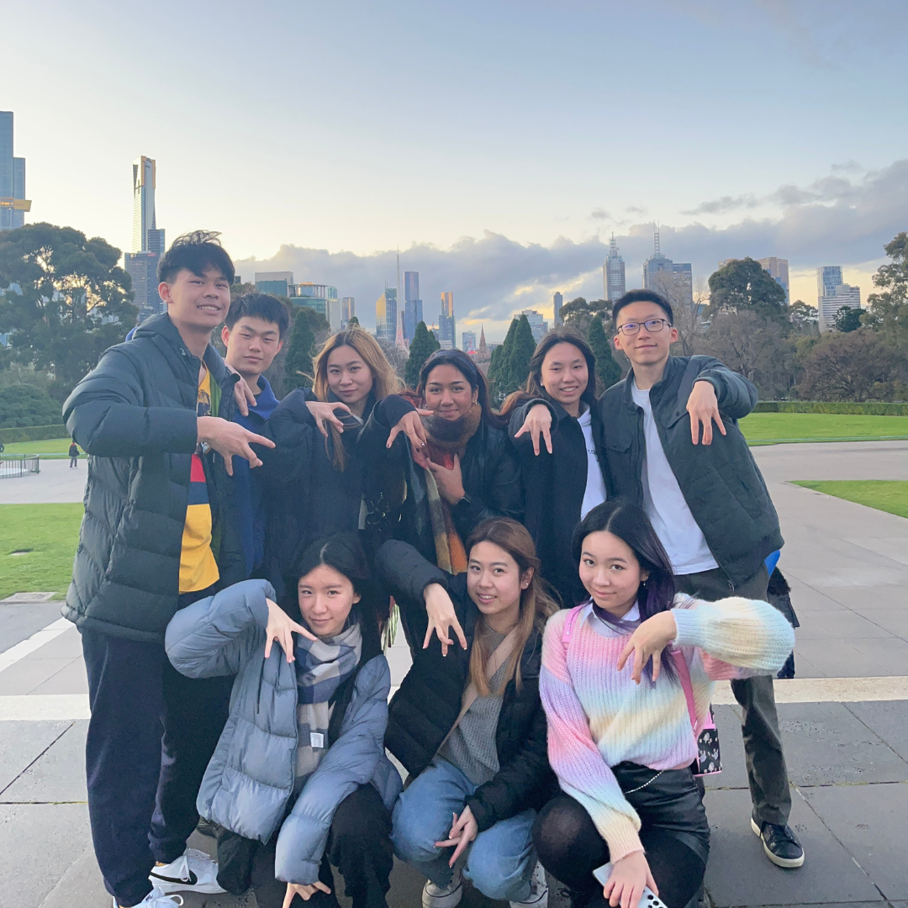

Hi! I am currently a 3rd year UNSW student studying a Bachelor of Computer Science / Commerce. I have a strong passion in the software engineering and UI/UX fields. I also have interests in the financial industry. I am known for being an enthusiastic learner and with a bubbly and empathetic nature. I am constantly looking for opportunities to creating intuitive and engaging user experiences by using my technical skills and further develop my understanding of design and programming by learning from industry professionals. I am keen on being challenged on various projects and look forward to collaborations with other like minded individuals.
Work Experience
Casual Academic @ UNSW - Lab assistant for Computer Systems Fundamental (COMP1521) and exam invigilator
Student Mentor @ UNSW - Mentoring first year mathematics courses
Online Tutor / Marker @ Dr Du Education - Tutoring and marking high school mathematics
Tutor @ Abacus Coaching Centre - Tutoring primary school students mathematics and english
Extracurricular
UNSW FinTech Society
As an IT Director for UNSW FinTech Society, I am committed to maintaining operation functionality of the society through managing various IT platforms (including the society website, communication channels, emails and cloud drive).
Arc Wellness Warriors
As part of the Wellness Warrior team, I have worked with a number of other students as a general vollie to challenge the struggles that are associated with student mental health and well-being. I have been involved with in-person and online activations, Stress Less Week and spreading the wellness message across campus.


UNSW CSESoc
As a Marketing Subcommittee Member for UNSW CSESoc, I was responsible for working with fellow subcom members in promoting events, opportunities and content provided by CSESoc to maximise our reach by managing and expanding CSESoc's presence on various social media platforms. This involved created promotional content using social media, photography and recording videos of CSESoc's social events. I also created graphic designs, written event descriptions and scheduled content on all social media platforms.
I was also a part of the Peer Mentoring Team for CSESoc, where we aimed to make incoming CSE students feel more supported, provide opportunities to form friendships with other students, and get more involved in the CSE society. As part of a group (8 mentees), my co-mentor and I provided information, support and friendliness, networking opportunities, and early professional development for mentees.


